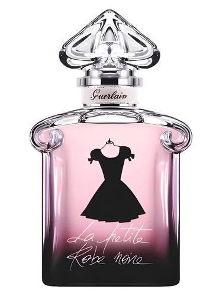

La Petite Robe Noire
- Para mujer
- Familia dulce
- Lanzado en 2012
- Ideal para otoño y invierno
Con caja$1,950Te lo conseguimos en 2 días a 1 semanaSin caja$950Te lo conseguimos en 2 días a 1 semana
No disponible: te lo conseguimos en 2 días a 1 semana
Cómo huele
Dulce
Cereza
Frutal
Almendra
A frutos secos
Sus notas
Salida
cereza ácidaalmendrabayas rojasbergamota
Corazón
regalizrosatérosa de Taif
Fondo
vainillaaníshaba tonkapachulíiris
La Petite Robe Noire de Guerlain es un perfume dulce para mujer, lanzado en 2012. Abre con cereza ácida y almendra, en el corazón tiene regaliz y rosa y deja un fondo de vainilla y anís. Lo que más se siente: dulce, cereza y frutal.